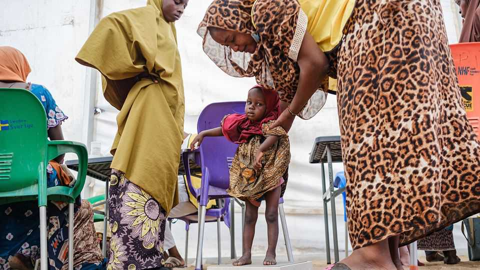

How will AI philanthropy change development aid?
As Anthropic and its ilk join the donor class, they must avoid old pitfalls

Oct 1st 2026
AT ANTHROPIC, the promise and peril of artificial intelligence (AI) are a family affair. Dario Amodei, chief executive of the AI firm in San Francisco that developed Claude, recently warned that superintelligence could wipe out humanity. Daniela, his sister and the firm’s president, is instead excited about how AI could save lives. She tells The Economist that global health is becoming a focus for Anthropic, which is working with aid organisations across Africa to use Claude in health care and to forecast food insecurity.
For now, such efforts remain small. AI companies have announced development efforts worth a few hundred million dollars this year—a rounding error in global aid spending. But it is arriving as traditional aid retreats. Rich countries cut development assistance by 23% last year, to $174bn. Nan Ransohoff, who works on public goods at Stripe, a payments company, estimates that the OpenAI Foundation, Anthropic’s founders and its employees could eventually account for $37bn-100bn in charitable spending each year. Some of that will go to poor countries. How will the new money help development?
AI firms may offer technology as well as money. Anthropic, for example, is working with the International Rescue Committee (IRC) and the UN’s World Food Programme, providing access to Claude and engineering support. In Nigeria, a project using AI has cut the time nursing staff spend on some tasks by around 60% by helping synthesise unstructured patient data, according to David Miliband, the IRC’s head. Such productivity gains matter more as aid cuts squeeze capacity: the organisation has had to close more than 500 health centres over the past year.
But past efforts to use technology in aid offer a warning that cheaper access to expertise is not enough. A scheme that handed laptops to children in poor countries boosted computer use without improving test scores because the devices were poorly integrated into curriculums. Digital-health tools have often worked in trials but failed to survive in local health systems.
Donors also tend to see the world through their own expertise. Norway, a country with many fishermen, once poured aid into fisheries in Kenya, only to build a frozen-fish plant that never opened. AI donors may see every problem as a job for AI, even if the real constraints lie elsewhere.
Take malaria, which kills about 600,000 people a year, mostly in Africa. Two effective vaccines are available, and 25 African countries have introduced them into routine childhood immunisation. But Gavi, the global vaccine alliance, faces a funding shortfall of nearly 30% for the programme. AI models could help target vaccination campaigns. But AI tokens cannot pay for vaccines or get them into children’s arms.
Even where AI tackles an important constraint, donors must consider what else limits progress. In cancer screening, for instance, AI could make it cheaper to identify patients at risk, but that would increase demand for scarce lab work and treatment. In Kenya more than half of surveyed hospitals offered screenings for cervical cancer in 2022, but only around 5% of them could treat it. AI philanthropists should think about funding the things that are needed to put AI-driven advances to use.
The dismantling of USAID in 2025 showed how vulnerable services are when they depend heavily on an outside donor. AI philanthropy could create dependence through free model credits and foreign engineers. When the support stops, “Who owns the data and the code, and can the local team keep running the thing?” asks Leo Anthony Celi, a researcher at the Massachusetts Institute of Technology.
Ultimately, what matters is local control. Mr Miliband points to an IRC education programme that became sustainable when Iraq, Jordan and Lebanon incorporated it into national curriculums. Similarly, the best AI-driven projects will eventually make the donor—and perhaps even the donor’s model—dispensable. ■
Sign up to the Analysing Africa, a weekly newsletter that keeps you in the loop about the world’s youngest—and least understood—continent.